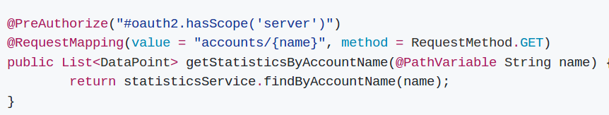
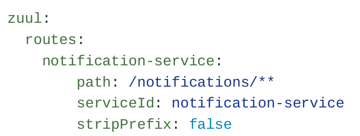
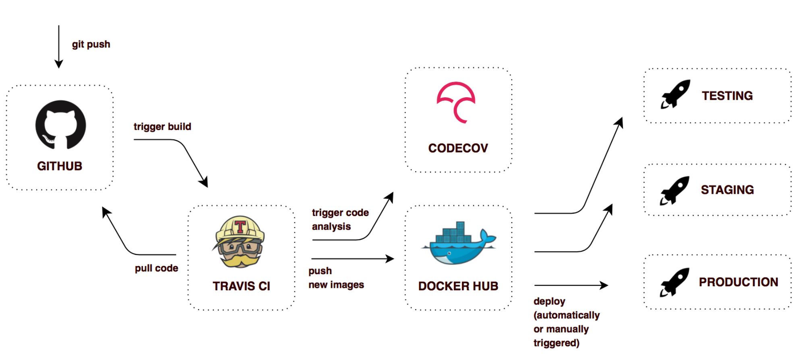

Your browser doesn't support the features required by impress.js, so you are presented with a simplified version of this presentation.
For the best experience please use the latest Chrome, Safari or Firefox browser.

Vrhovno sodišče Republike Slovenije
Jože Rihtaršič, 30. 05. 2017
Kazalo:
- Kaj je oblak;
- Programiranje za oblak - distribuirani sistemi;
- Primer "piggimetrics";
- Naloge
- IaaS (Infrastructure as a Service) nudi predvsem „računalniške vire“ disk, RAM, processorske moči. Uporabnik lahko izbere lasten OS,
ter konfiguracijo navidezne strojne opreme.
- PaaS (Platform as a Service)omogoča postavitev različnih konfiguracij aplikacij in orodij (primer LAMP – linux, apache mysql, PHP).
Uporabnik navadno ne nadzira spodaj ležeče infrastrukture (omrežje, datotečni sistem , OS), temveč ima nazor samo nad nameščeno aplikacijo oz. nastavitavmi platoforme.
- SaaS (Software as Service) omogoča izvajanje aplikacij v infrastrukturi oblaka in je navadno dostopna več odjemalcem (Brskalnik, tablica itd.)
Nekatere najbolj znane SaaS storitve: Google Gmail, Google Documents, Hotmai, Facebook, Twitter, LinkedIn, Oracle Fusion Application Services ...
Developing applications in the cloud is a little like visiting Canada from America. Most everything is the same, but there are small differences that you notice and need to accommodate."
David J. Jilk, Standing Cloud
"Cloud services are only as scalable as the underlying web application. If the web application has inherent programming bottlenecks, moving the application into the cloud will not help."
Jeffrey Huckaby, rackAID
„The cloud isn't the equivalent of more hardware to throw at the problem.“
"In the case of Amazon EC2, you'll be charged based on bandwidth, memory, and CPU, so a developer needs to build applications with these factors in mind."
Alpesh Patel, Ektron
"Cloud development by itself isn't any different than traditional development. What it is, however, is less tolerant of poor development practices."
Marc LaFleur, Parlance Corporation
"To really implement web services in the cloud properly developers have to think 'functionally' not 'object-ly'."
John Pavley, Limewire
Microservisi so poseben pristop za implementacijo storitveno usmerjene arhitekture (SOA), se uporablja za izgradnjo prilagodljive,
neodvisno premestljive sisteme programske opreme. Pristop mikroservisov je prva realizacijo SOA in postaja vse bolj
priljubljena za gradnjo "continuously deployed" sistemov.
- Filozofija mikroservisov: "Do one thing and do it well".
- Servisi so majhni, dobro definirani in izvajajo samo eno funkcijo.
- Za razvoj mikrostoritev se mora prilagoditi tudi organizacija kultura, ki mora vključevati avtomatizacijo testiranja in nameščanja
(Scrum, Kanban, (ostale DevOps tehnike)).
- Zmanjšuje breme vodenja in omogoča, da lahko različne skupine bolj samostojno razvijajo svoje enote.
- Z dobro postavljenim okoljem/arhitekturo omogočajo izdelavo "porazdeljenih sistemov"
- Klici med storitvami obremenjujejo mrežni promet in povečujejo čas obdelave podatkov oz. izvajanja procesov
- Testiranje in nameščanje je lahko bolj zapleteno zlasti, če se vse izvaja ročno oz. če je postavljena slaba infrastruktura.
- Težje spreminjanje namena (faktoriziranje (razcepljanje) ali združevanje servisov ) posameznih storitev.
- Preveliko drobljenje servisov povečuje kompleksnost aplikacije.
Piggy Metrics (proprosta aplikacija za vodenje osebnih financ) uporablja Spring Cloud, Spring Boot in Docker

Spring Cloud je implementacija "pogostih vzorcev" za izdelavo distribuiranih sistemov. Mikroservisi pa so tipa Spring boot aplikacije.

Spring Cloud Config je centralni strežnik za nastavitve.
- Distribuirani sistemi -> konfiguracija na enem mestu
- Možnost dinamičnega spreminjanja konfiguracije
- Spring Cloud Config - uporaba repozitorija git - možnost verzionirnja konfiguracij
- Mikroservis konfiguracija - samo naslov do strežnika za konfiguracijo
Ločen avtentikacijski/avtorizacijski strežnik, ki omogoča OAuth2 protokol.
Spring Cloud Security vsebuje priročne anotacije za uporabo OAuth2 žetončkov pri klicu mikroservisov.
- Avtentikacija mikroservisov
- Avtentikacija uporabnikov

V praksi navadno "sodeluje" večje število mikroservisov za generiranje ene spletne strani
Dostop do mikroservisov preko Gateway-ev
- Usmerjanje poizvedb na prave mikroservise
- Lahko uporablja vzorce: Fail-over, Load-balacing, Circuit breaker,...
- Konkretni primer: Netflix Zuul proxy + Spring clound anotacije

- Register mikroservisov
- Konkretni primer: Netflix Eureka + Spring clound anotacije
- Eureka je implementacija vzorca: "client-side discovery pattern"
- Mikroservisu s Spring anotacijami "določimo" možnost da se poveže z "Eureka Server". Ob zagonu mikroserver
sporoči metapodatke (host, port, stanje itd.)
- Eureka sprejema "heartbeat" sporočila servisov - če daljše obdobje sporočila ne pridejo se servis avtomatsko odstrani iz registra
Avtomatizirana distribucija mikroservisov je nujni pogoj v porazdeljenih sistemih!
- Sposobnost izgradnje servis kadarkoli
- Vsaka izgradnja je lahko končna/produkcijska različica
- Možnost enostavnega nadzora/upravljanja namestitev izgrajenih različic
- Travis CI - izdela tudi docker image in jo označi z git-hash oznako
- V dockerhub-u obstajajo tako vse različice označene git-hash-om (možost rollback deploy)
- Možnost enostavnega nadzora/upravljanja namestitev izgrajenih različic:
- avtomatske namestitve (razvojno in testno okolje)
- ročno prožene namestive (šolsko okolje, produkcija)

Disribuirani sistemi (Programiranje za oblake)
Kaj mora CIF narediti?
- Postaviti "ekosistem" za distribuiran sistem (Avtorizacijski strežnik (OAuth2 protokol?), Service discovery, Nadzor,
distribuirana baza (je oracle primeren?) ... )
- Postaviti "ekosistem" za razvoj distribuiranih sistemov (Avtomatska izgradnja in avtomatsko "disribuirano" nameščanje mikroservisov )
- Organizacijske spremembe - prevetritev nalog in odgovornosti: Skrb za sisteme, nadzor, spremenjen način razvoja (devOps - (Scrum))
- Izobraževanje produkcije/podpore za postavljanje ključnih sistemov in nadzor nad delovanjem
- Izobraževanje razvoja in projektnih skupin za vodenje in usmerjanje zunanjih izvajalcev pri implementaciji distribuiranih sistemov
Če ne bomo uspešno posvojili načina razvoja in upravljanja distribuiranih sistemov - bomo dobili zelo kompleksno aplikacijo in
veliko novih tehnologij